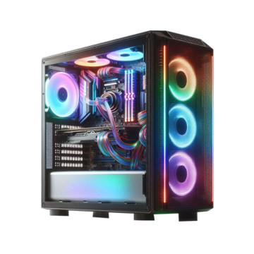

PNG
This is an image of a gaming computer!
The PNG format is a popular image format mostly used for creating a cutout of an image with no background!
I chose this image as I love to play video games along with work on computers in general! I hope I can eventually get a job working on computers in the future!
Source: PNG